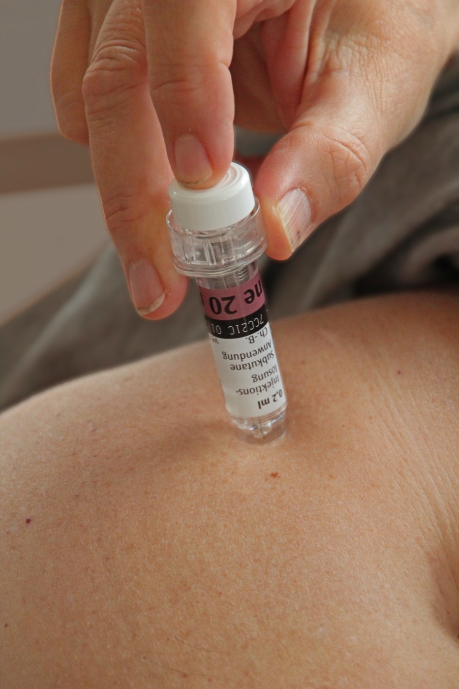

Página 6 · Profilaxia — a escada
Profilaxia: quem, e em que degrau
Ela ainda não trombosou nesta gestação — quem merece anticoagular, e em que dose?
A página é uma árvore de decisão pura. A pergunta abre exatamente o galho que a estratificação vai percorrer, e é onde a voz-escada da plataforma se materializa: três degraus, um eixo de decisão claro.
Quem entra na profilaxia e o primeiro corte: ≥2 eventos ou SAF → dose PLENA
Até aqui, a conversa era sobre a paciente com evento agudo — a que trombosou e precisa tratar. Agora muda o sujeito: a paciente que ainda não teve o evento nesta gestação, mas tem risco maior de fazer. As principais candidatas à profilaxia são quem já teve algum evento trombótico antes e quem tem síndrome do anticorpo antifosfolípide (SAF). O primeiro passo é estratificar: essa paciente já teve trombose? Foi uma vez só, ou duas ou mais? E o primeiro corte é firme: se ela teve ≥2 eventos prévios OU tem diagnóstico de SAF, a conduta é anticoagulação plena — o mesmo 1 mg/kg de 12/12h do evento agudo. Não é profilaxia leve; é dose cheia.
Um evento só: alto risco de recorrência → pré-natal + 6 semanas pós-parto
Se ela não tem SAF e teve um episódio só, é preciso avaliar o risco de recorrência — e é aqui que a escada se ramifica. O que caracteriza ALTO risco de recorrência é um evento prévio que foi associado à gestação ou ao uso de estrogênio (contraceptivo). Por quê? Porque o gatilho daquele trombo — o estado gestacional/hormonal — vai se repetir nesta gestação. Essa paciente merece profilaxia mais longa: HBPM profilática durante o pré-natal + 6 semanas depois do parto. Atenção à sutileza: mesmo sendo "alto risco", ela não vai para dose plena — faz dose profilática, mas com duração estendida. O que muda entre alto e baixo risco aqui é a duração, não a dose.
Um evento só: baixo risco (fator transitório) → só no puerpério
O BAIXO risco de recorrência é o evento provocado por um fator transitório que já não existe. Dois exemplos ajudam a fixar: a paciente que sofreu um politrauma em algum momento da vida e trombosou na sequência — um evento aleatório, ligado àquele trauma, que não tende a se repetir; e a paciente que fez uma cirurgia com imobilização prolongada e trombosou logo depois — o fator de risco era daquele momento e agora acabou. Como o gatilho não vai voltar, ela recebe apenas dose profilática no puerpério — cobre-se a janela de maior risco (o pós-parto) sem estender pela gestação inteira.
Dose PLENA — ≥2 eventos ou SAF
Anticoagulação plena (1 mg/kg 12/12h). O corte mais alto: dois ou mais eventos prévios, ou diagnóstico de SAF, mesmo sem evento agudo nesta gestação.
Profilática estendida — 1 evento, alto risco
Evento associado à gestação/estrogênio (gatilho que volta): HBPM profilática no pré-natal + 6 semanas pós-parto. Dose profilática, duração longa.
Profilática só no puerpério — 1 evento, baixo risco
Evento por fator transitório que acabou (politrauma, cirurgia com imobilização): cobre-se só a janela de maior risco, o puerpério.
≥2 eventos OU SAF → plena (1 mg/kg 12/12h). · 1 evento + alto risco (gestação/estrogênio) → profilática, pré-natal + 6 sem pós-parto. · 1 evento + baixo risco (transitório: politrauma, cirurgia com imobilização) → profilática, só no puerpério.

O ensino da peça é o gesto: a seringa pré-preenchida de enoxaparina aplicada no plano subcutâneo do abdome inferior, longe do umbigo — a técnica que a paciente repete em casa durante as semanas de tromboprofilaxia estendida.
© Frank C. Müller, Wikimedia Commons — Thrombosespritze 07 (seringa de tromboprofilaxia, 20 mg de Clexane/enoxaparina). Licença CC BY-SA 4.0 · fonte
Licença share-alike (SA): reuso mantém a atribuição e a mesma licença.Quiz — fixação
Gestante com um único episódio prévio de TVP, ocorrido durante o uso de anticoncepcional. Sem SAF. Qual a profilaxia?
- C — alto risco de recorrência. Evento associado ao estrogênio = gatilho hormonal que se repete na gestação → profilática estendida: pré-natal + 6 semanas.
- A. Subtrata: "evento único" não zera o risco quando o gatilho é recorrente.
- B. Confunde alto risco com dose plena — alto risco muda a duração, não a dose; plena é para ≥2 eventos ou SAF.
- D. É o regime do baixo risco (transitório); trocaria 40+ semanas de proteção por só o puerpério — insuficiente para um gatilho que volta.
Qual paciente recebe anticoagulação PLENA na profilaxia?
- B — o corte da dose plena. SAF (ou ≥2 eventos) dispara dose plena, mesmo sem evento agudo nesta gestação.
- A. Exemplo-âncora de baixo risco (fator transitório que não volta): profilática só no puerpério.
- C. Igualmente baixo risco (transitório): nunca dose plena.
- D. Inventa uma regra sobre primigesta inexistente — a decisão é por eventos/SAF/recorrência, não por paridade.
Definido o degrau e a duração, falta o número que a banca mais persegue: a dose profilática exata, ajustada pelo peso.